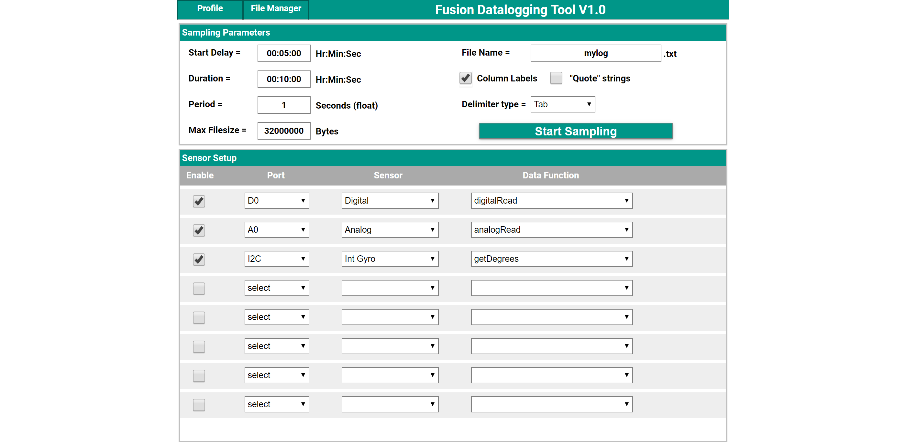
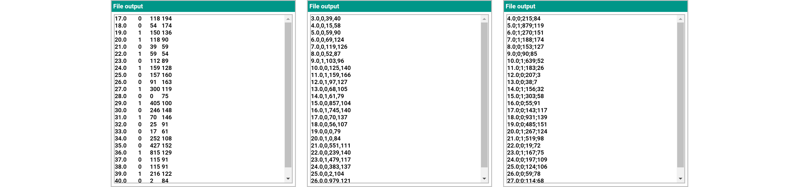
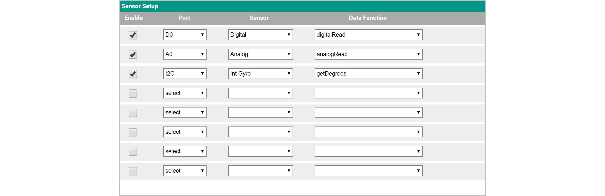
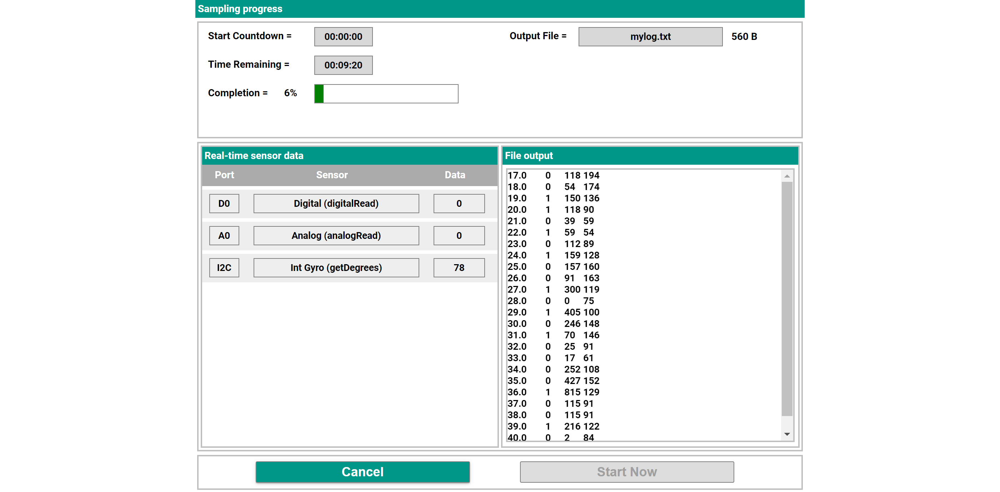
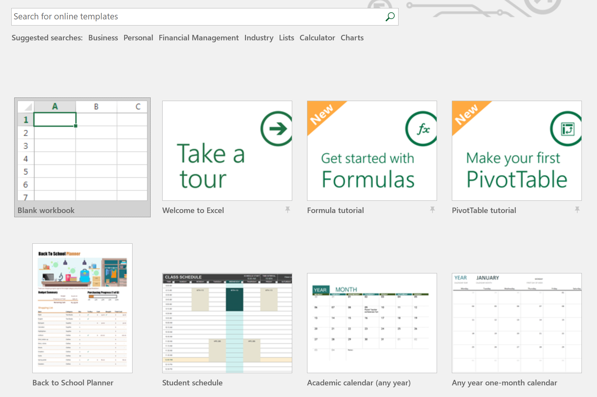
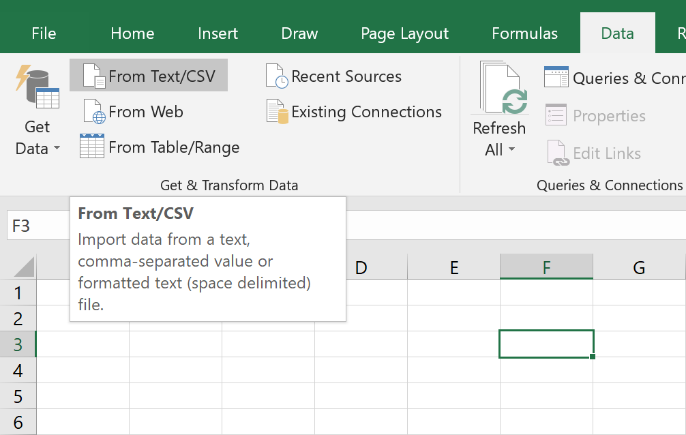
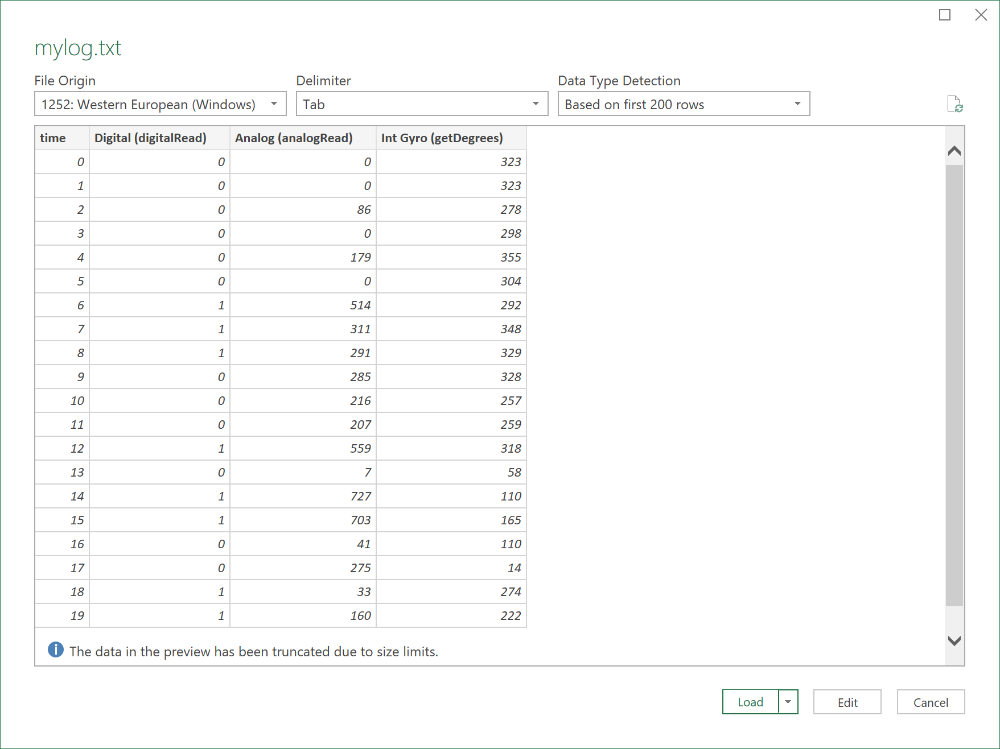
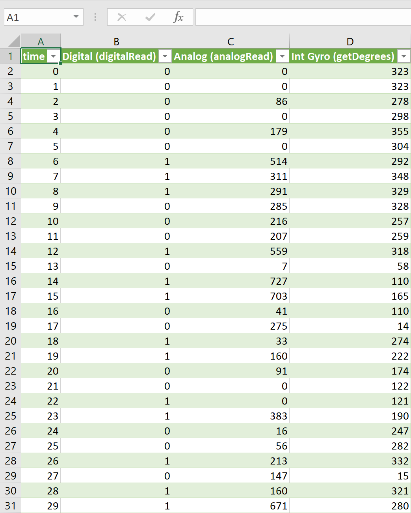
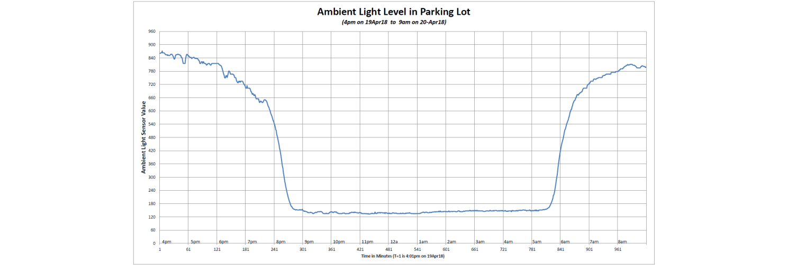

Data Logging Tool
The Data Logging Tool feature of the Fusion Controller allows you to collect and store readings collected from one or more sensors over a period of time. While not something that a robot might use, it is a very valuable function when conducting experiments or studying natural phenomena. For example, with an ambient light sensor, you can have the Fusion measure the light level in a greenhouse every minute over a 24 hour period to examine how light affects the plant growth. Or, using an accelerometer, you can measure the G-Forces 100 times every second while a robotic cart is rolling down an incline and crashing into a wall.
The data collected with the data logger function is stored in a delimited text file that can easily be read into a spreadsheet program and graphed for analysis or presentation.

The Profile tab on the top bar allows you to Save a profile, Load a profile or Create a New profile. Saving a profile saves the information in the Sampling Paramters window as well as the selected sensors and function in the Sensor Setup window. Saving profiles makes it much easy to run multiple experiments without having to remember and setup the experiment every time.
The File Manager tab on the top bar has the options to Export and Delete log files (.txt) or profiles. Exporting a file allows you to download it to your computer so that it can be imported into a spreadsheet or graphing software. Refer to the section Log File Usage on using the log file.
Sampling Parameters
Start Delay is the amount of time before the sampling will begin. This is useful for starting the sampling at a desired time without having to be present.
Duration is the length of time the sampling will take place.
Period is the time interval between samples. In the example above a same is taken every 1 second. The smallest allowed time interval between samples is 0.01 seconds.
Max Filesize is a limiter on the size of a log file which, when reached, will stop the sampling. The default is set to 32,000,000 Bytes (32MB). The only reason to modify this value would be if a log file requires multiple sensors over several hours. Experiment with smaller sample sizes to get an idea of possible file sizes.
File Name is the name of the saved text files that will contain all the sampling data. Creating a text file with the same name of a file that already exists will automatically overwrite the file.
Column Labels will add the proper labels for each column at the top of the text file. Therefore when the file is imported into a spreadsheet all of the columns are properly labeled.
"Quote" strings puts quotes around the column labels.
Delimiter Type refers to how the data is separated. The data is separated by a Tab, Comma or Semicolon. Below are examples of how the data is produced depending on the delimiter type selected. The data displayed is organized by the following columns (based on Sensor Setup): Time, Digital Read, Analog Read, Get Degrees.
The Start Sampling button will advance to the Sampling Screen screen.
Sensor Setup

Enable
Port
Sensor
Function
Checking this box adds the sensor to list of sensors to be sampled and logged.
Displays a list of available sensor ports. Select the port the sensor to be sampled is connected to.
Select if the sensor is Analog, Digital or one of the specific I2C sensors.
A list of available data for the selected sensor.
Click Start Sampling in the Sampling Paramters window to advance to the Sampling Screen screen.
Sampling

Start Countdown is the amount of time before the sampling will begin. If you want to start sampling before the time reaches 00:00:00, click the Start Now button in the lower right hand corner of the screen.
Time Remaining displays the time left sampling based on input from the previous page.
Completion indicates the time remaining in sampling as a percentage.
Output File is the name given on the previous screen. Once sampling is concluded a text file (.txt) will be saved.Real-Time Sensor Data displays what the sensors are currently reading.
File Output displays a preview of the data that will be contained in the log file.
Log File Usage
Once the sampling is complete and a log file is saved, the next step is to display the data in a meaningful way. Go to File Manager and select Export to save the file to your local computer. Select the name of the log file you just created and click Export to download it locally.
For this example we will use Microsoft Excel to display the information from the sampling.
- Open a Blank workbook after opening Excel.
- Click the Data tab and select Form Text/CSV.
- A preview of your data will be displayed. Click Load to open the data in a spreadsheet. 
- The spreadsheet now contains all the sampling data from the previously run experiment.
- The next step to take would be to make graphs or some sort of visual display to represent the data. Below is an example of a Light Sensor reading the ambient light levels from before sunset to after sunrise.

Questions?
Contact Boxlight Robotics at support@BoxlightRobotics.com with a detailed description of the steps you have taken and observations you have made.
Email Subject: Fusion Data Logging Tool